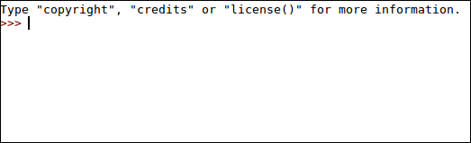

By the end of this lesson you will be able to:
Think back to the Foo example program from the last lesson. We could actually write a program, call it translate, that would convert Python into Java. If were clever, we could even write
translate to optimize our Java code. That means that translate would know that c always equaled one, and could write Java code with that shortcut. In fact,
translate would get rid of most useless code! If we could write translate (and you actually could), then you could make Python as fast as Java. So why is Python slow?
To understand that, we need to understand how code is run. Imagine we have a C++ program. Now, the computer knows one thing: binary. So are we going to get from C++ to binary? Well, we have a program called a compiler that turns the reads the C++ code and writes a program in binary. Our translate program is actually a compiler: it compiles Python to Java. Languages that use a compiler are called compiled languages. Just like when we turned Python to Java, compiled languages often have extra code. Compiler Optimization is a major field of research which seeks to minimize this effect. Python, however, is different.
Python is interpreted. In an interpreted language, the code is read as a series of instructions that are executed one after another. To understand how this works, let's look at example.py:
print("Hello Everyone")
print("I'm example.py")
If Python was compiled, example.py would be turned into a bunch of binary which might look like this: 0101000100101001010101001010. We might be able to optimize that string of binary into
this: 01010001001010010101.
To see how Python works, open up IDLE if your on Windows and do not open a file. If you're on linux, go to your terminal and run python without giving a file name. What
you should be looking at is something like this:

This is the Python Interpreter. Go ahead and type some print statements. You'll see that each print statement executes as soon as you press enter. Python is executing each line as it is
typed. This is exactly how a Python file is run. Each line is put through the interpreter, you just don't see it. So if we wanted to optimize Python, we would have to do it with each execution.
Problem is, you can't take many shortcuts if you don't know what's going to happen next. In our Foo program, the Python interpreter wouldn't know that c=1 is always true until it's too late.
That's why Python is slow
If interpreted languages are slow, then why use them? The answer goes back to scripting languages. As we discussed, Python's speed doesn't matter for the small programs it was designed for. What matters more is development time. As anyone who's written a large Java program knows (or anyone who has hand-compiled), it takes a bit of time for the code to compile. When you just want to code to run, that's quite an inconvience. Interpreted languages, however, start working as soon as you run them. This means that you can run and test your code much faster, cutting down on dev. time. Once again, it's all about context.
As you've seen, the Python Interpreter is interactive. That means you can run code without actually making a new file, a great feature for testing out bits of code. Python is also a great desk calculator! As we'll see later, Python has a ton of support for math. For right now, you can actually just open the Python Shell (the interactive bit) and start typing arithmetic. You don't even need a print. Give it a try! Easy, right? Now, type an underscore (_). That's the last value you calculated, and you can use it as a variable. We'll use the shell throughout this course and in the next lesson, so get familiar!
In this lesson, you learned about the Python Interpreter and Shell. You learned how to use it and how it executes Python. You learned why it makes Python slow, and why that's ok for some jobs.